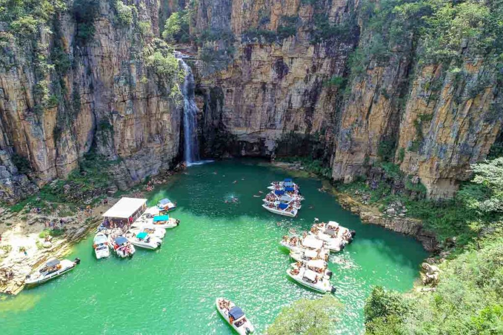

Capitólio é um destino encantador localizado no coração de Minas Gerais, famoso por suas paisagens naturais deslumbrantes.
Banhado pelo Lago de Furnas, conhecido como o "Mar de Minas", o local oferece cânions imponentes, cachoeiras de águas cristalinas e mirantes com vistas espetaculares.
Entre os destaques estão os Cânions de Furnas, onde imensas formações rochosas se encontram com águas esverdeadas, criando um cenário único.
A região também abriga cachoeiras impressionantes, como a Lagoa Azul e a Cascata Eco Parque, além de trilhas que levam a vistas panorâmicas inesquecíveis.
Com natureza exuberante e um clima agradável, Capitólio é o destino ideal para quem busca aventura, lazer e descanso em meio a paisagens de tirar o fôlego.
